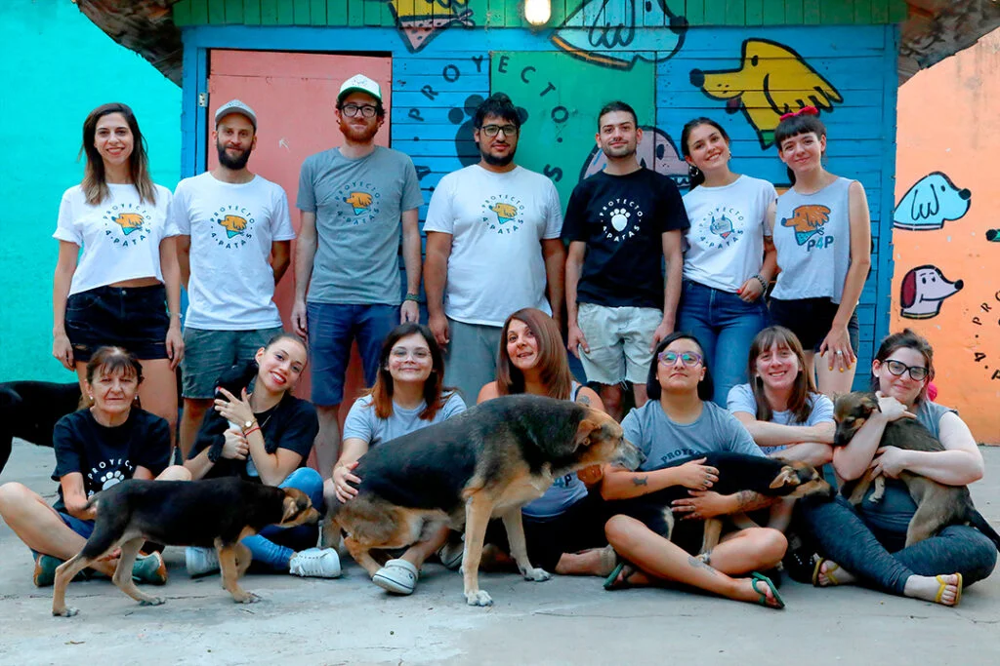

Ser voluntario en Proyecto 4 Patas es la forma más directa de transformar la realidad de los animales que más lo necesitan.
Sumamos personas con ganas de colaborar en el cuidado diario de los animales rescatados, el traslado a castraciones y veterinarias, la difusión en redes sociales y la organización de jornadas de adopción.
No hace falta experiencia previa: alcanza con compromiso, empatía y muchas ganas de darle una mano a quienes no tienen voz.

¿Querés ser parte del cambio? Sumate a nuestro equipo de voluntarios.